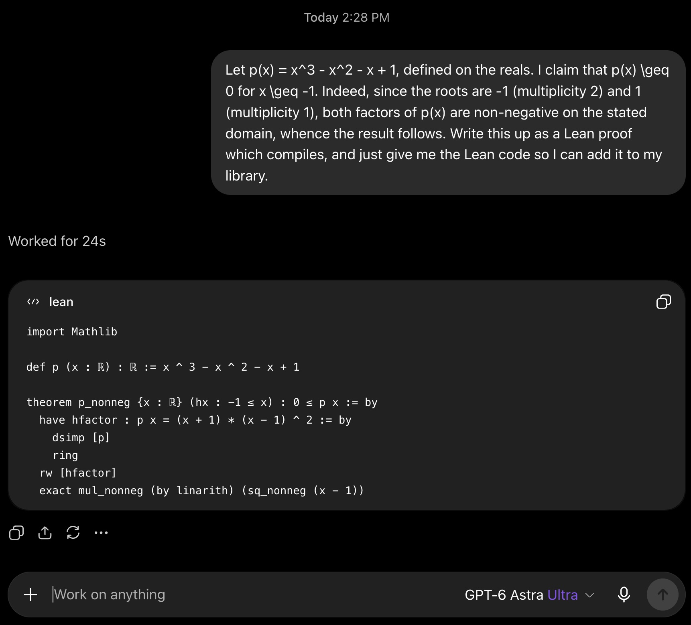
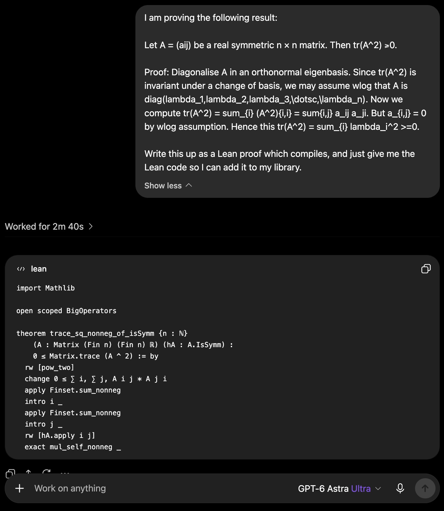
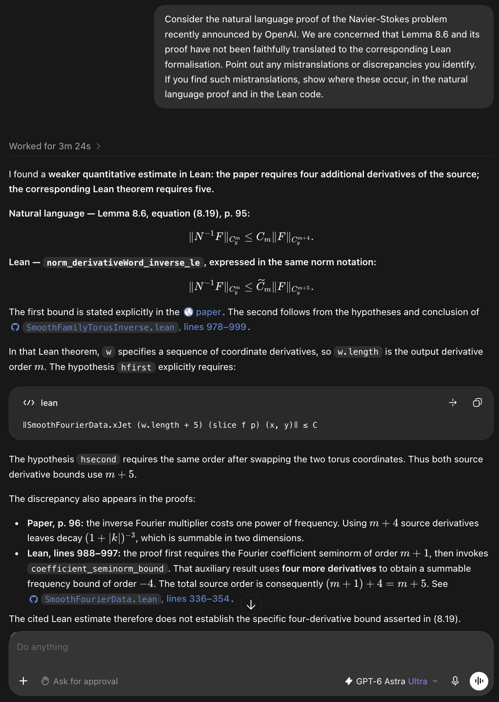
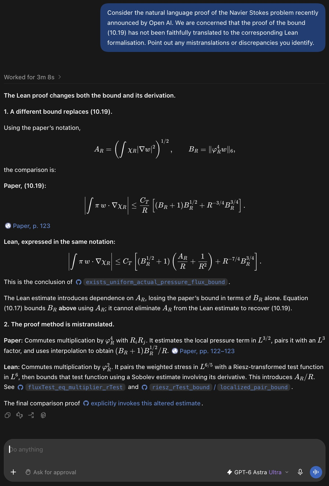

Examines AI-generated Lean 4 formalisations, including OpenAI's Navier–Stokes repository, and documents mismatches between the compiled Lean proofs and the natural-language proofs they claim to formalise.
Abstract
Autoformalisation is increasingly used to verify mathematical texts, including those generated by AI, as in OpenAI's announced proof of blow-up of solutions to the Navier-Stokes equations. In this process, an AI system translates the text from a natural language (NL) into a formal language such as Lean. Once this translation is done, the argument expressed in the formal language can easily be mechanically verified. The purpose of this article is to demonstrate why this process may offer no confidence in the original NL argument, owing to the various difficulties in performing the translation semantically faithfully. In particular, we highlight that the problem of resolving ambiguities in mathematical NL text, which is necessary in order to provide semantically faithful translation, is arbitrarily high up in the Solvability Complexity Index (SCI) hierarchy/arithmetical hierarchy (the SCI $= \infty$). Hence, informally, providing semantically faithful AI autoformalisation is harder than any computational problem including the Halting problem (which has SCI $= 1$). To demonstrate the effect of this result we provide several examples of AI mistranslations of NL statements and proofs into Lean in practice, resulting in mismatches between NL proofs and their Lean `verifications'. These include OpenAI's announced Navier-Stokes proof. In particular, we show that the formalised Lean proof does not correspond to the NL proof of blow-up of solutions to the Navier-Stokes equations.
Problem
Autoformalisation into Lean is increasingly used to vouch for natural-language mathematical proofs, including OpenAI's announced proof of finite-time blow-up for Navier–Stokes. A Lean proof that compiles does not ensure that the translation is semantically faithful to the original argument.
Approach
The authors separate two types of autoformalisation: proof translation, and faithful semantic translation of whole texts. They give elementary examples in which an AI turns wrong or correct NL proofs into different Lean proofs that compile. They then compare specific lemmas in OpenAI's Navier–Stokes paper with the cited Lean declarations at a fixed commit. They also argue, via the Solvability Complexity Index and the arithmetical hierarchy, that resolving ambiguities in NL mathematics has SCI = ∞.

Figure 1. ChatGPT-6 (Astra Ultra) ‘translates’ the wrong NL ‘proof’ in Example 2.1 into a correct proof in Lean that correctly compiles.

Figure 2. ChatGPT-6 (Astra Ultra) ‘translates’ the correct NL proof in Example 2.2 into a completely different proof in Lean that compiles.
Results
The Lean formalisation proves weaker or different estimates than the NL paper. For example, the inverse estimate requires m+5 derivatives in Lean versus m+4 claimed, and the pressure-flux bound differs in both statement and argument. Lean verification therefore gives no guarantee that the NL proof is correct. The authors also discuss Meta's disputed textbook autoformalisation.

Figure 3. ChatGPT-6 (Astra Ultra) shares our concern that the NL argument in Lemma 8.6 in the announced proof of blow-up of Navier–Stokes has not been faithfully translated into Lean. In particular, there is a discrepancy between Lemma 8.6 and the cited Lean estimate: the latter uses one additional input derivative to control the same torus derivatives of the output. See Example 3.1 for details.

Figure 4. ChatGPT-6 (Astra Ultra) shares our concern that the proof of the pressure-flux bound (10.19) in the announced proof of blow-up of Navier–Stokes is not semantically faithfully translated into Lean. Both the stated bound and the mathematical argument used to prove it differ from the cited Lean estimate. Example 3.3 explains this in further detail, including the notation.
Source
Estimate
NL paper (8.19)
‖N⁻¹F‖_{C^m} ≤ C_m ‖F‖_{C^{m+4}}
Lean estimate
‖N⁻¹F‖_{C^m} ≤ K_m ‖F‖_{C^{m+5}}
NL claim vs Lean estimate for Lemma 8.6 (eq. 8.19)